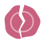
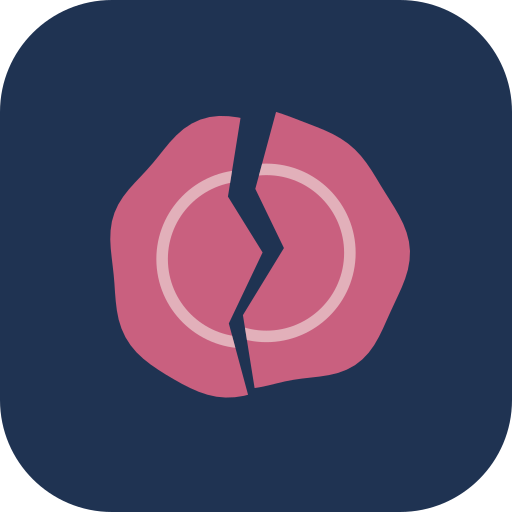

Logo: the broken seal
Chosen by the owner: S1. A wax seal at the moment it breaks: one crack, two halves, slightly apart. It shows the one irreversible event in OneVello: the secret is opened once and is gone.
Mark
Burgundy wax (--color-seal) with an embossed ring. The ring and the fine crack are dropped at 32 px and below, where the halves move further apart so the break stays visible.

App icon and favicon
Navy tile #1F3352, wax #C9607F, paper emboss #F6F2EA. The simplified icon is used at 32 px and below; the favicon is the bare simplified mark.

Wordmark and lockups
"OneVello", one word with the capital V, Source Serif 4 600, tracked −1.2%. The mark sits left, its height ≈ 1.45 × the cap height, gap = ½ mark. Minimum: mark 16 px, lockup 96 px wide. Clear space: the width of one seal half on every side.
- Use the mark alone where space is tight (tab, app icon, avatar).
- Keep the wax colour; on photos or colour, use the app icon tile.
- The lockup SVG uses live text; for print or the app, outline it from Source Serif 4.
- Close the crack or rotate the halves further.
- Recolour the wax to navy, red or green.
- Put the mark inside "OneVello" as a letter.
Considered
The other four concepts, kept for history.